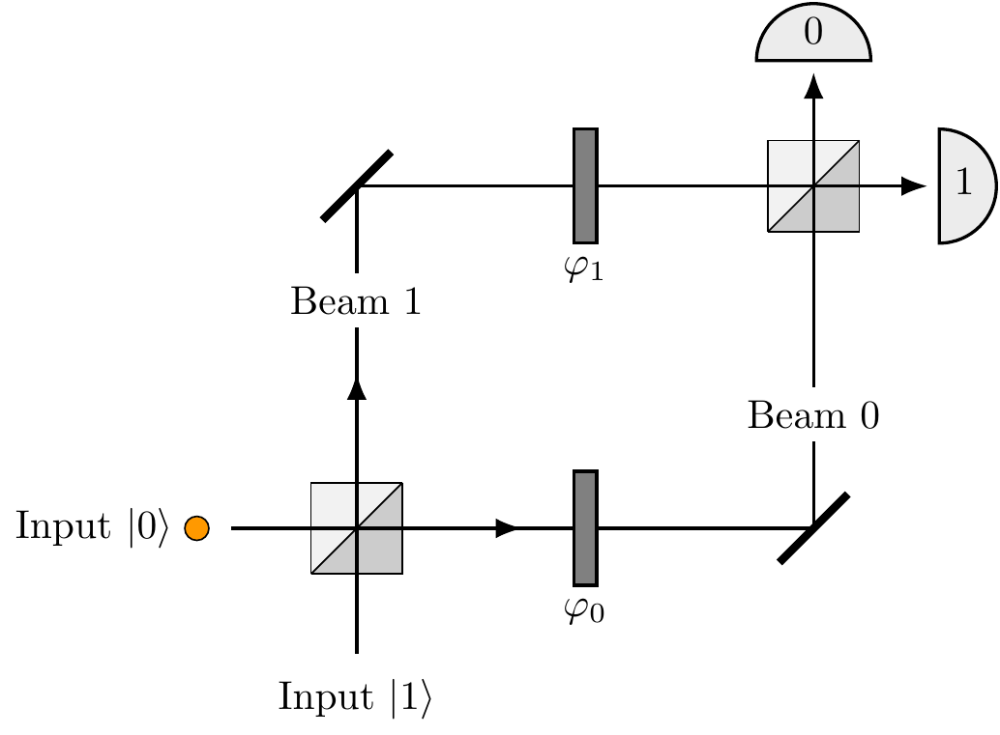

1.12 Supplement: Quantum interference revisited (still about beam-splitters)
One of the simplest quantum devices in which quantum interference can be controlled is a Mach-Zehnder interferometer — see 1.15.
Figure 1.15: The Mach-Zehnder interferometer, with the input photon represented by the orange dot. This experimental set-up is named after the physicists Ludwig Mach and Ludwig Zehnder, who proposed it back in 1890s.
It consists of two beam-splitters (the square boxes, bottom left and top right) and two slivers of glass of different thickness which are inserted into each of the optical paths connecting the two beam-splitters. The slivers are usually referred to as “phase shifters” and their thicknesses, \(\varphi_0\) and \(\varphi_1\), are measured in units of the photon’s wavelength multiplied by \(2\pi\). The two inputs ports of the interferometer are labelled as \(|0\rangle\) and \(|1\rangle\), and each of the two output ports, also labelled as \(0\) and \(1\), terminates in a photodetector.24
A photon (the orange dot in the figure) impinges on the first beam-splitter from one of the two input ports (here input 1) and begins its journey towards one of the two photodetectors. Let25 \(U_{ij}\) denote the probability amplitude that the photon initially in input port \(j=0,1\) ends up in detector \(i=0,1\). At each of the two beam-splitters the photon is transmitted with the probability amplitude \(\sqrt{T}\) and reflected with the probability amplitude \(i\sqrt{R}\), with \(R+T=1\), and the two phase shifters modify the amplitudes by phase factors \(e^{i\varphi_0}\) and \(e^{i\varphi_1}\), respectively. In quantum theory we almost always start with the amplitudes, and once we have a full expression for the amplitude of a given outcome we square its absolute value to get the corresponding probability. For example, let us calculate \(U_{00}\).
We notice that there are two alternative ways for the photon in the input port \(0\) to end up in the output port \(0\). It can take the lower path, through the phase shifter \(\varphi_0\), or the upper path, through the phase shifter \(\varphi_1\). The lower path implies two consecutive transmissions at the beam-splitters and the phase factor \(e^{i\varphi_0}\), whereas the upper path implies two consecutive reflections and the phase factor \(e^{i\varphi_1}\). Once the photon ends in the output port \(0\) there is no way of knowing which path was taken, thus we add the amplitudes pertaining to each path. The resulting amplitude is \[ U_{00} = \sqrt{T} e^{i\varphi_0} \sqrt{T} + i\sqrt{R} e^{i\varphi_1} i \sqrt{R}, \] and the corresponding probability \(P_{00}=|U_{00}|^2\) reads \[ \begin{aligned} P_{00} & = \left\vert \sqrt{T}e^{i\varphi_0}\sqrt{T} + i\sqrt{R}e^{i\varphi_1}i\sqrt{R} \right\vert^2 = \left\vert Te^{i\varphi_0} - Re^{i\varphi_1} \right\vert^2 \\& = T^2 + R^2 - 2TR\cos(\varphi_1-\varphi_0). \end{aligned} \]

The “classical” part of this expression, \(T^2+R^2\), basically says that the photon undergoes either two consecutive transmissions with probability \(T^2\), or two consecutive reflections with probability \(R^2\). The probability of being transmitted through any phase shifter is always \(1\), hence the phase shifters play no role in the classical description of this process. But the classical description is not correct, as the experiments show, whence the interference term \(2TR\cos(\varphi_1-\varphi_0)\) in which the phase shifters play the essential role. Depending on the relative phase \(\varphi=\varphi_1-\varphi_0\) the probability that the detector \(0\) “clicks” can vary from \((T-R)^2\), for \(\varphi=0\), to \(1\), for \(\varphi=\pi\).
If we do not care about the experimental details, we can represent the action of the Mach-Zehnder interferometer in terms of a diagram: see 1.16.
Figure 1.16: The Mach-Zehnder interferometer represented as an abstract diagram.

Here we can follow, from left to right, the multiple different paths that a photon can take in between specific input and output ports. The amplitude along any given path is just the product of the amplitudes pertaining to the path segments (Rule 1), while the overall amplitude is the sum of the amplitudes for the many different paths (Rule 2). You can, for example, see that the probability amplitude \(U_{10}\) is given by \[ U_{10} = \sqrt{T}e^{i\varphi_0}i\sqrt{R} + i\sqrt{R}e^{i\varphi_1}\sqrt{T} \] and the corresponding probability is \[ \begin{aligned} P_{10} & = \left\vert \sqrt{T}e^{i\varphi_0}i\sqrt{R} + i\sqrt{R}e^{i\varphi_1}\sqrt{T} \right\vert^2 \\& = 2RT + 2RT\cos(\varphi_1-\varphi_0). \end{aligned} \] Again, the first term is of “classical” origin and represents probabilities corresponding to each path: one reflection followed by one transmission plus one transmission followed by one reflection, that is, \(RT+TR=2RT\). The second term is the interference term. Clearly, the photon entering port \(1\) will end up in one of the two detectors, hence, \[ P_{00} + P_{10} = R^2 + 2RT + T^2 = (T+R)^2 = 1. \] The action of the interferometer is thus fully described26 by the four probability amplitudes \(U_{ij}\) (\(i,j=0,1\)). The most popular instance of a Mach-Zehnder interferometer involves only symmetric beam-splitters \((R=T=\frac12)\) and is fully described by the matrix \[ U = \begin{bmatrix} -\sin\varphi/2 & \cos\varphi/2 \\\cos\varphi/2 & \sin\varphi/2 \end{bmatrix} \] where \(\varphi=\varphi_1-\varphi_0\). In fact, when you do all the calculations you obtain \(ie^{\,i\frac{\varphi_0+\varphi_1}{2}}U\) rather than \(U\), but the global phase factor \(ie^{\,i\frac{\varphi_0+\varphi_1}{2}}\) is common to all the amplitudes in the matrix and as such it does not contribute to the resulting probabilities (why?).
The two diagonal objects in the top-left and bottom-right corners of 1.15 are simply mirrors to make the two possible paths meet at the second beam-splitter.↩︎
We will often use \(i\) as an index even though it is also used for the imaginary unit. Hopefully, no confusion will arise for it should be clear from the context which one is which.↩︎
In general, any isolated quantum device, including a quantum computer, can be described by a matrix of probability amplitudes \(U_{ij}\) that input \(j\) generates output \(i\). Watch the order of indices.↩︎